PUNK
DIY
ATRI
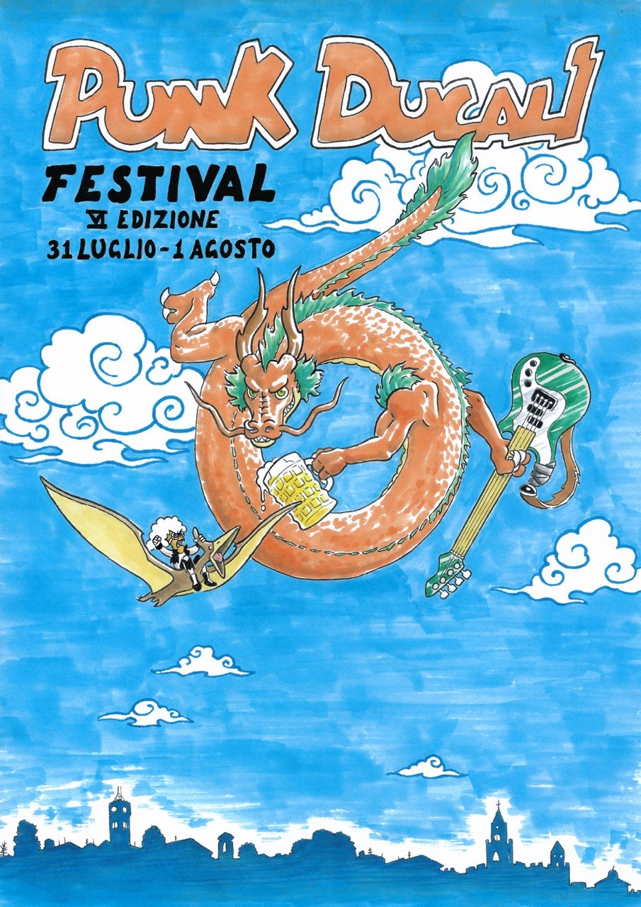
VI EDIZIONE
Punk Ducali Festival
31 luglio — 1 agosto 2026
Villa Comunale · Atri (TE)
Line up
Le band saranno annunciate presto
Line up in arrivo
Rivivi il festival
Tre giorni, tre reel, stesso caos.
Archivio edizioni
Poster, lineup e memoria storica del nostro casino.
2025V Edizione
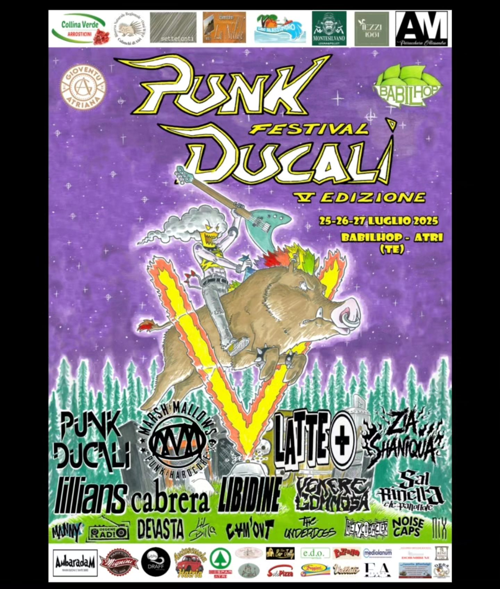
Marsh Mallows, Latte+, Cabrera, Punk Ducali, Zia Shaniqua, Lillians, Libidine, Venere Gommosa, The Underdogs, Devasta, Degeneradio, Lil Spino, Pleiades, Cam'Out, Helycobacter, Manny, Noise Caps, Nix.
2024IV Edizione

RFC, Spaventapassere, Civic-50, Loser Name, Punk Ducali, Zia Shaniqua, Thousand Years Between, Penelope Aspetta, Kusameze, Random Act, I Treni, Fainted, The Blink Bang Theory, Degeneradio, Cam'Out, Jack Anal, Stoneguard, Dalts.
2023III Edizione
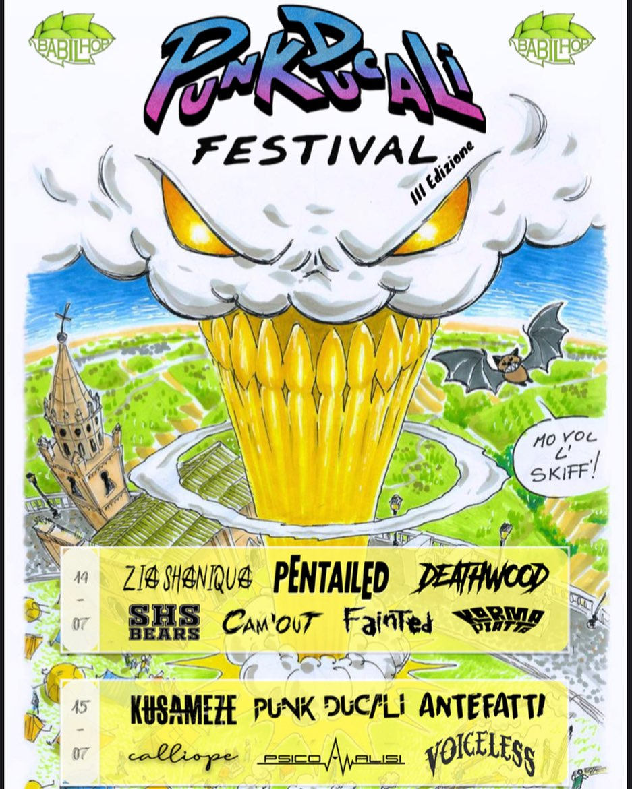
Antefatti, Punk Ducali, Zia Shaniqua, Kusameze, Pentailed, Deathwood, SHS Bears, Cam'Out, Fainted, Karma Piatta, Calliope, PsicoAnalisi, Voiceless.
2022II Edizione

Punk Ducali, Penelope Aspetta, Uino, Francesco Crispi, Donquixote, Loud Sound.
2020I Edizione
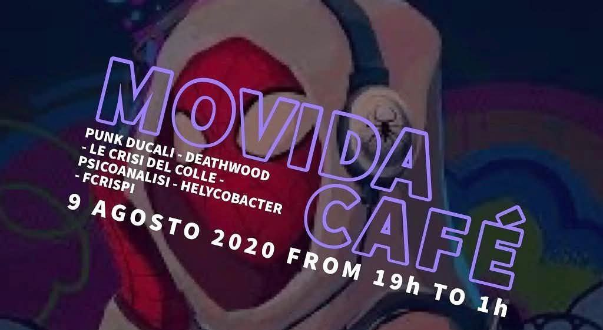
Punk Ducali, Deathwood, Le Crisi del Colle, Psicoanalisi, Helycobacter, Francesco Crispi.
Foto
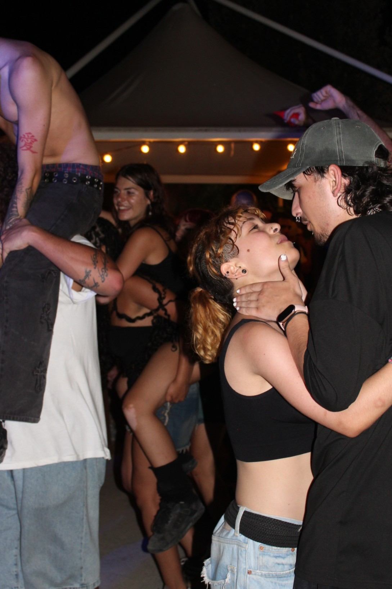

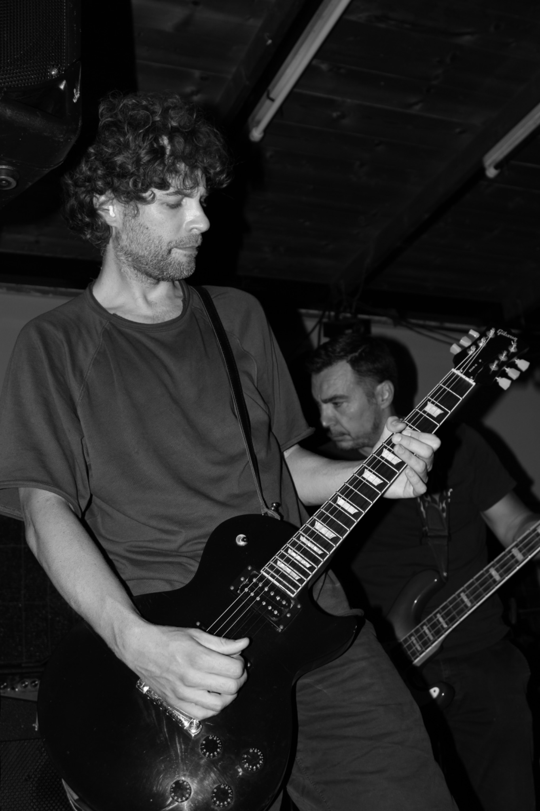
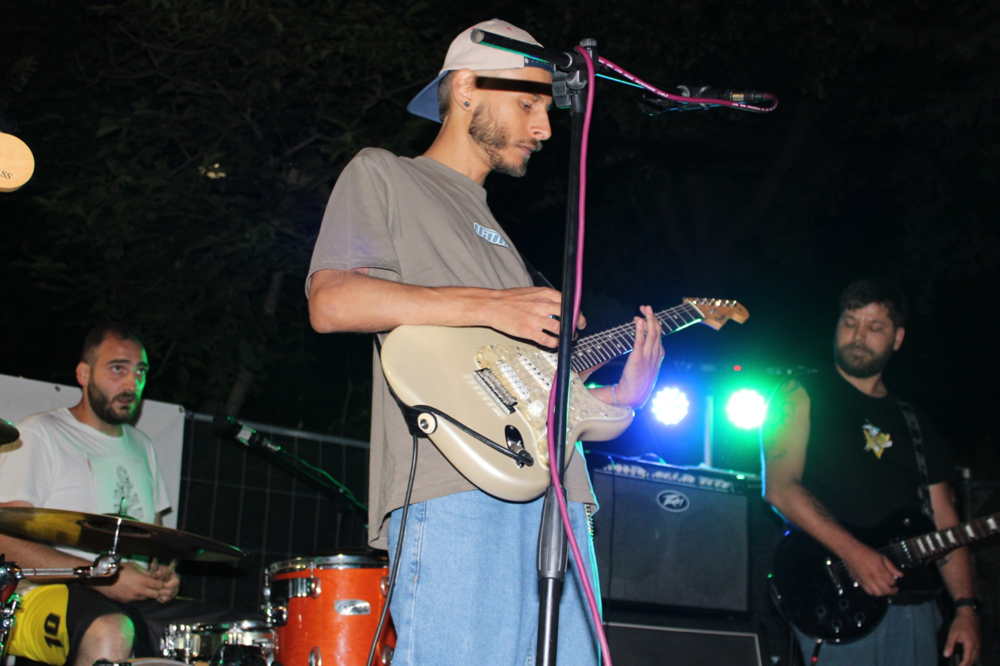


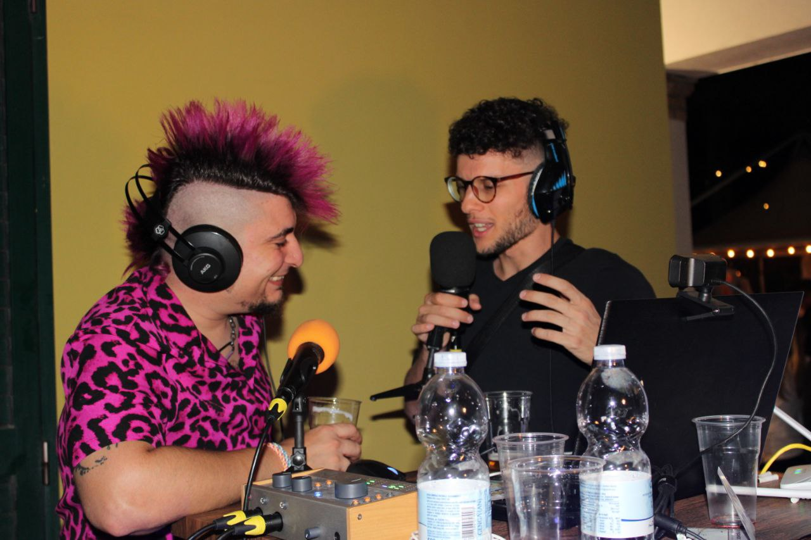
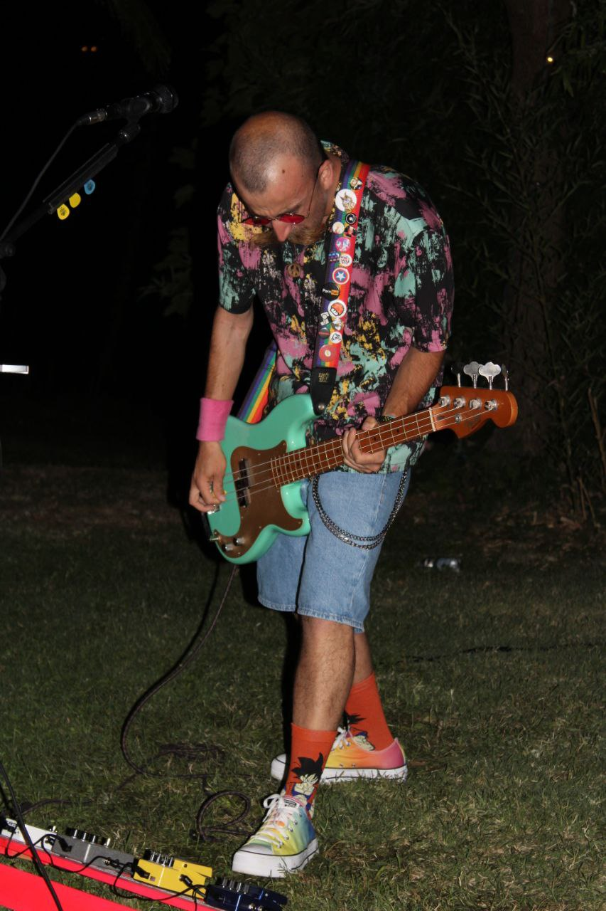
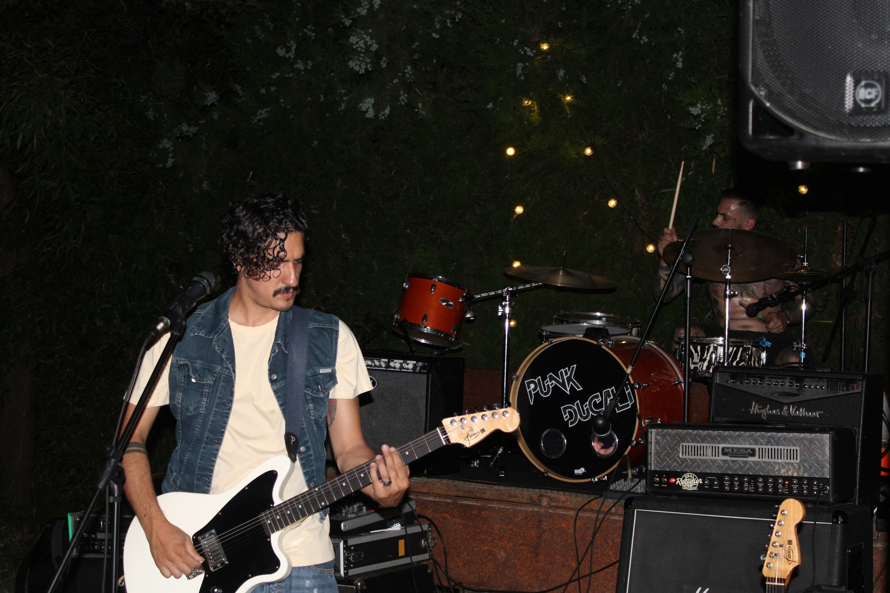
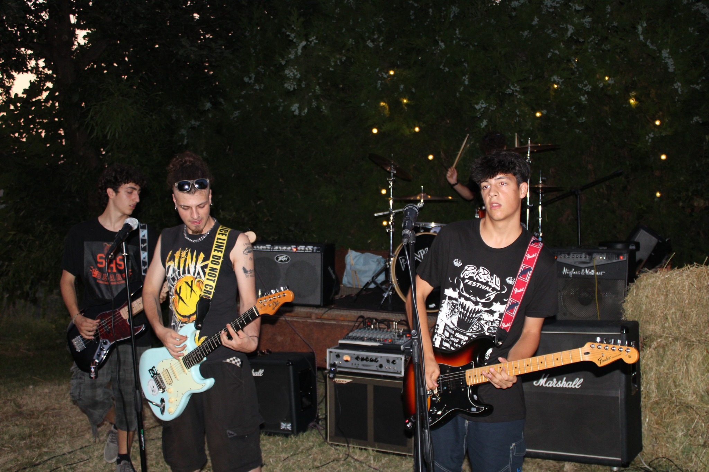
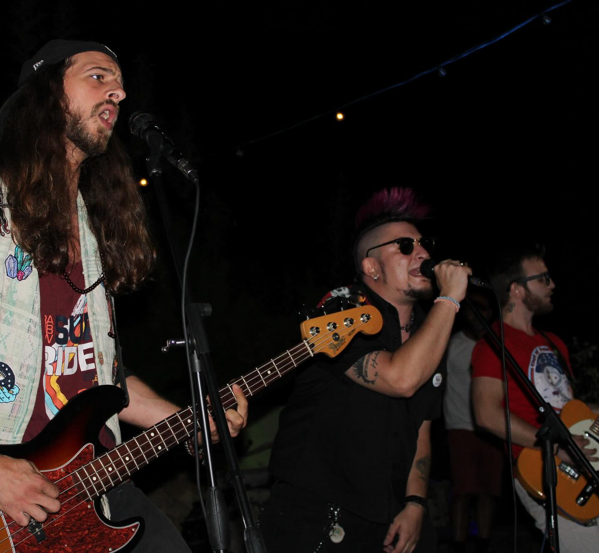
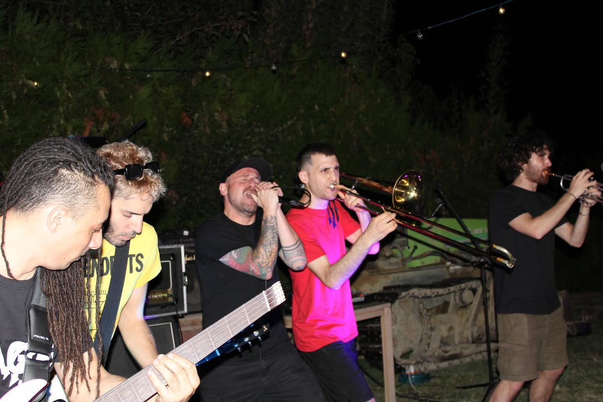
Sostieni Punk Ducali
Aiutaci a tenere vivo un festival indipendente, gratuito e costruito dal basso.
Vai alla raccolta fondiContatti
Vuoi suonare, collaborare, proporre uno stand o sostenere il festival?